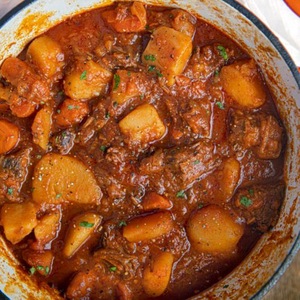

Goulash from Eastern Europe

Description
Goulash is kind of in between a soup and a stew. Unlike some stews, goulash is not overly packed full of beef and vegetables,
it is a little more brothy. But through the cooking process, the broth becomes thicker and more like a rich sauce.
And no, contrary to popular belief here in the U.S., goulash is NOT made with ground beef or (heaven forbid) macaroni noodles!
Ingredients
- 3 tablespoons of pork lard
- 680 grammes of yellow onions, chopped
- 27 grammes of quality genuine imported Hungarian sweet paprika
- 680 grammes of stewing beef, cut into small pieces
- 5 cloves of garlic
- 2 red bell peppers, seeded, cut into 1 cm chunks
- 1 yellow bell pepper
- 2 tomatoes
- 2 carrots
- 2 medium potatoes, cut into 1 cm chunks
- 1200 ml of beef broth (traditionally just water is used)
- 1 bay leaf
- 1 teaspoon of salt
- 1/2 teaspoon of freshly ground black pepper
- 1/2 teaspoon of crushed caraway seeds (optional)
Steps
- Melt the pork lard or butter/oil in a Dutch oven or other heavy soup pot over medium high heat and cook the onions until beginning to brown, about 7-10 minutes.
- Add the beef and cook until the beef is just starting to brown, 7-10 minutes.
- Add the bell peppers, tomatoes, and garlic and cook for another 6-8 minutes.
- Remove the pot from the heat and stir in the paprika, salt, pepper and caraway (if using) (note: paprika becomes bitter if at all scorched).
- Add the beef broth, bay leaf, return to the stove and bring to a boil.
- Reduce the heat to medium, cover and simmer for 40 minutes.
- Add the carrots and potatoes.
- Return to a boil, reduce the heat to medium, cover, and simmer for another 30-40 minutes or until the beef is nice and tender.
- Add salt to taste and remove the bay leaf.
- Enjoy!